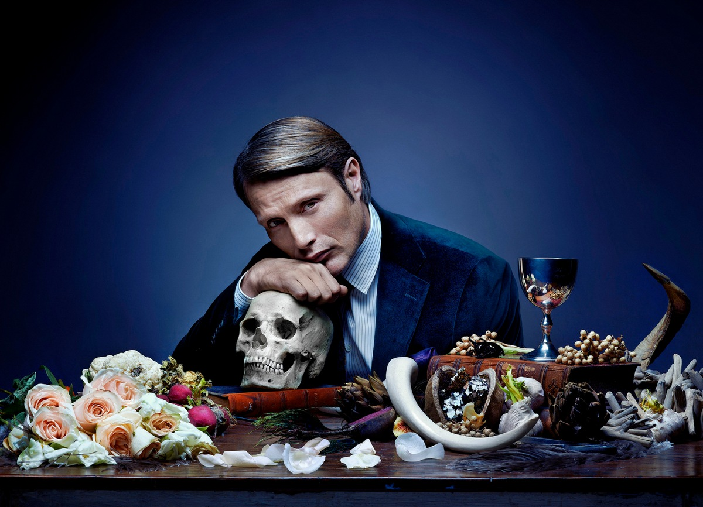

About Mads Mikkelsen:
Mads Mikkelsen (born November 22, 1965, in Copenhagen, Denmark) is a world-renowned Danish actor known for his versatility and intense screen presence. He first gained international fame as Le Chiffre in Casino Royale (2006) and later impressed audiences as Hannibal Lecter in Hannibal (2013-2015). His performances in The Hunt (2012) and Another Round (2020) showcased his emotional depth, earning critical acclaim and major awards. Mikkelsen has also starred in Rogue One: A Star Wars Story (2016) and Fantastic Beasts: The Secrets of Dumbledore (2022). With his signature intensity and subtle performances, he remains one of the most respected actors in modern cinema.
From Hannibal 2013
Movies and Tv Shows
Movies
- The Hunt
- Another Round
- Casiono Royal
TV Shows
- Hannibal
- Unit One